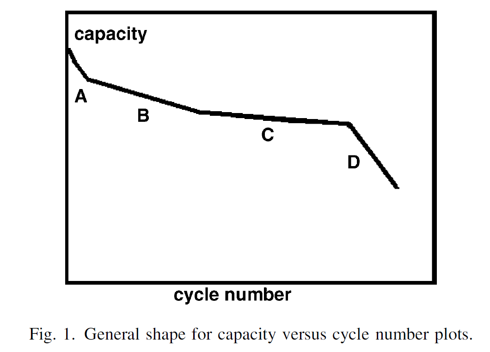
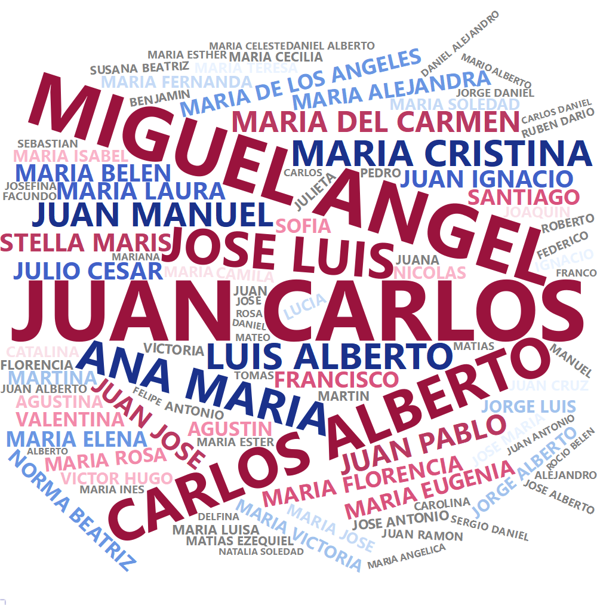

| desde | hasta | carga |
|---|---|---|
| 2021-04-05 | 2021-04-12 | 84380 |
| 2021-04-12 | 2021-04-19 | 84161 |
| 2021-04-19 | 2021-04-26 | 83950 |
| 2021-04-26 | 2021-05-02 | 84340 |
| 2021-05-02 | 2021-05-10 | 84340 |
| 2021-05-10 | 2021-05-16 | 83002 |
| 2021-05-16 | 2021-05-23 | 82206 |
| 2021-05-23 | 2021-05-31 | 83694 |
| 2021-05-31 | 2021-06-06 | 80030 |
| 2021-06-06 | 2021-06-13 | 80622 |
Anexo: otros datasets
A continuación se referencian otros dataset incluidos en la librería datosIC, con su descripción, variables y fuente; y un detalle de posibles temas que podrían cubrir en aspectos de docencia.
| Dataset | Temas |
|---|---|
bateria |
Regresión |
jugadores |
Estadística descriptiva |
nombrarg |
Estadística descriptiva |
viviendas |
Estadística descriptiva |
xGFIFA22 |
Estadística descriptiva |
Descripción, variables y fuente
bateria
Descripción: Datos del historial de capacidad de carga de una batería de Li-Ion L19M4PC2 con capacidad de fábrica de 80.000 mWh en una Notebook LENOVO 81YT con 505 ciclos de carga.
Variables:
desde: fecha de inicio del período, en el formato año-mes-día.hasta: fecha de finalización del período, en el formato año-mes-día.carga: carga máxima alcanzada (mWh) durante el período.
Fuente: Reporte generado a partir de la instrucción
powercfg /batteryreporten Windows 11.
Disponible en la librería datosIC bajo el nombre de bateria.

jugadores
Descripción: Datos de jugadores de fútbol de primera división de Argentina al 2023, que incluyen datos de nacimiento y altura. Datos procesados y puestos a disposición por Pablo Mislej para el DATATÓN llevado a cabo en 2023 en FCEyN UBA, a cargo de Mariela Sued y en colaboración con María Eugenia Szretter Noste.
Variables:
Equipo: equipo en el que juega a la fecha.Puesto: posición en la que juega a la fecha.Jugador: nombre del jugador.Edad: edad del jugador al 2023.Nacimiento: fecha de nacimiento del jugador, en el formato día-mes-año.Altura: altura (cm) del jugador.Ciudad: ciudad de nacimiento del jugador.Pais: país de nacimiento del jugador.Mes: mes de nacimiento del jugador.Anio: año de nacimiento del jugador.
Fuente: Consultar con Pablo Mislej.
Disponible en la librería datosIC bajo el nombre de jugadores.
| Equipo | Puesto | Jugador | Edad | Nacimiento | Altura | Ciudad | Pais | Mes | Anio |
|---|---|---|---|---|---|---|---|---|---|
| Argentinos | ARQ | Alexis Martin Arias | 30 | 4/7/1992 | 185 | Pellegrini | Argentina | 7 | 1992 |
| Argentinos | ARQ | Federico Lanzillota | 30 | 1/12/1992 | 188 | Villa Luzuriaga | Argentina | 12 | 1992 |
| Argentinos | ARQ | Miguel Acosta | 21 | 19/10/2001 | 189 | NA | Argentina | 10 | 2001 |
| Argentinos | ARQ | Lucas Alegre | 20 | 12/12/2002 | NA | NA | Argentina | 12 | 2002 |
| Argentinos | ARQ | Agustin Mangiaut | 18 | 24/5/2004 | NA | NA | Argentina | 5 | 2004 |
| Argentinos | DEF | Miguel Torren | 34 | 12/8/1988 | 179 | Santa Fe | Argentina | 8 | 1988 |
| Argentinos | DEF | Mariano Bittolo | 33 | 24/4/1990 | 175 | Moron | Argentina | 4 | 1990 |
| Argentinos | DEF | Lucas Villalba | 28 | 19/8/1994 | 177 | NA | Argentina | 8 | 1994 |
| Argentinos | DEF | Jonathan Sandoval | 35 | 25/6/1987 | 179 | NA | Uruguay | 6 | 1987 |
| Argentinos | DEF | Leonel Gonzalez | 29 | 15/3/1994 | 177 | Concordia | Argentina | 3 | 1994 |
nombrarg
Descripción: Datos del histórico de nombres registrados ante el Registro Nacional de las Personas en Argentina desde 1922 y hasta 2015 agrupado por nombre y año. Se preprocesó la base de datos.gob.ar excluyendo, entre otros, casos de múltiples nombres (especialmente, muy antiguos).
Variables:
nombre: nombre registrado, en mayúsculas y sin tilde.cantidad: cantidad de nombres registrados en el año.anio: año de registro.
Fuente: datos.gob.ar
Disponible en la librería datosIC bajo el nombre de nombrarg.
| nombre | cantidad | anio |
|---|---|---|
| LEONEL HERNAN | 7939 | 1975 |
| JUAN CARLOS | 7357 | 1953 |
| JUAN CARLOS | 7315 | 1950 |
| JUAN CARLOS | 7280 | 1951 |
| JUAN CARLOS | 7129 | 1952 |
| JUAN CARLOS | 7111 | 1954 |
| JUAN CARLOS | 7077 | 1955 |
| JUAN CARLOS | 6996 | 1949 |
| MARIA BELEN | 6940 | 1993 |
| JUAN CARLOS | 6908 | 1956 |

### viviendas |
| - Descripción: Datos de |
| - Variables: |
- : . -: . - : . -: . - : . -: . - : . -: . - : . -: . |
| - Fuente: |
Disponible en la librería datosIC bajo el nombre de viviendas. |
| ::: {.cell} |
| ::: |
| ::: {.cell} |
| ::: |
xGFIFA22
Descripción: Datos resumen de goles esperados (xG) y de goles esperados asistidos (xGA) para los jugadores del mundial FIFA 2022. En la actualidad, xG es el mejor predictor del rendimiento futuro tanto para jugadores como para equipos. xG es una métrica que mide la probabilidad de que un tiro dado termine en gol. Según StatsBomb, un modelo de xG utiliza información histórica de miles de tiros con características similares para estimar la probabilidad de gol en una escala de 0 a 1. Por ejemplo, un tiro con un valor de xG de 0,2 es uno que razonablemente se puede esperar que termine en gol dos de cada 10 veces. En el dataset, la columna de xG se construyó a partir de los datos de
statsBombRfiltrando todos los shots (tiros al arco) que no fueran penales, y sumando sus xG para cada uno de los jugadores. La métrica xGA se construye con una información adicional: la de los pases. De cada tiro al arco, se registra si proviene de un pase de asistencia. Luego, la variable xGA de este dataset se construyó a partir de filtrar todos los shots asistidos de los datos del mundial 2022 destatsBombRy sumar sus xG para cada uno de los jugadores.Variables:
jugador: nombre del jugador.xG: goles esperados (sin penales).xGA: goles esperados asistidos
Fuente: StatsBombR
Disponible en la librería datosIC bajo el nombre de xGFIFA22.
| jugador | xG | xGA |
|---|---|---|
| Aaron Mooy | 0.0391913 | 0.0394844 |
| Aaron Ramsey | 0.0253614 | 0.0226158 |
| Abdelhamid Sabiri | 0.1233840 | 0.6250091 |
| Abdelkarim Hassan Al Haj Fadlalla | 0.2749146 | 0.0308553 |
| Abdessamad Ezzalzouli | 0.0595074 | 0.1866609 |
| Abdou Diallo | 0.0354115 | 0.0581968 |
| Abdulaziz Hatem Mohammed Abdullah | 0.0244957 | 0.0233703 |
| Abdulrahman Al-Obood | 0.0417447 | 0.0131055 |
| Achraf Hakimi Mouh | 0.1360969 | 0.3659694 |
| Adrien Rabiot | 0.7281201 | 0.7964649 |
El gráfico de xG vs XGA que reproducimos a partir de los datos de xGFIFA22 puede verse en el carrousel de imágenes de StatsBomb, acá.